library(ggplot2)Warning: package 'ggplot2' was built under R version 4.5.2gapminder <- read.csv(
"https://raw.githubusercontent.com/swcarpentry/r-novice-gapminder/main/episodes/data/gapminder_data.csv"
)Adapted from Software Carpentry by Samuel Bharti
Today we will learn to:
Plotting is one of the best ways to quickly explore data and relationships between variables.
Three main plotting systems in R:
ggplot2 is built on the grammar of graphics. Any plot can be built from:
First, let’s load our packages and data:
library(ggplot2)Warning: package 'ggplot2' was built under R version 4.5.2gapminder <- read.csv(
"https://raw.githubusercontent.com/swcarpentry/r-novice-gapminder/main/episodes/data/gapminder_data.csv"
)The most basic function is ggplot():
ggplot(data = gapminder)
This creates a blank slate - we haven’t told it what to draw yet!
Use aes() to map variables to visual properties:
ggplot(data = gapminder, mapping = aes(x = gdpPercap, y = lifeExp))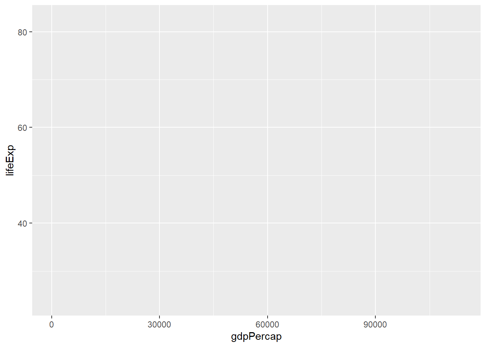
Now we have axes, but still no data points!
Tell ggplot how to represent the data visually:
ggplot(data = gapminder, mapping = aes(x = gdpPercap, y = lifeExp)) +
geom_point()
geom_point() creates a scatterplot of points.
Modify the example so that the figure shows how life expectancy has changed over time:
ggplot(data = gapminder, mapping = aes(x = gdpPercap, y = lifeExp)) +
geom_point()Hint: the gapminder dataset has a column called “year”, which should appear on the x-axis.
ggplot(data = gapminder, mapping = aes(x = year, y = lifeExp)) +
geom_point()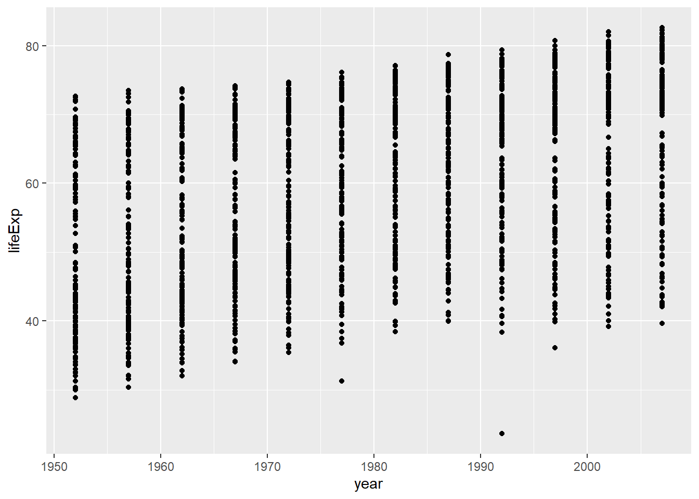
Modify the code from Challenge 1 to color the points by the “continent” column.
What trends do you see in the data? Are they what you expected?
ggplot(data = gapminder, mapping = aes(x = year, y = lifeExp, color = continent)) +
geom_point()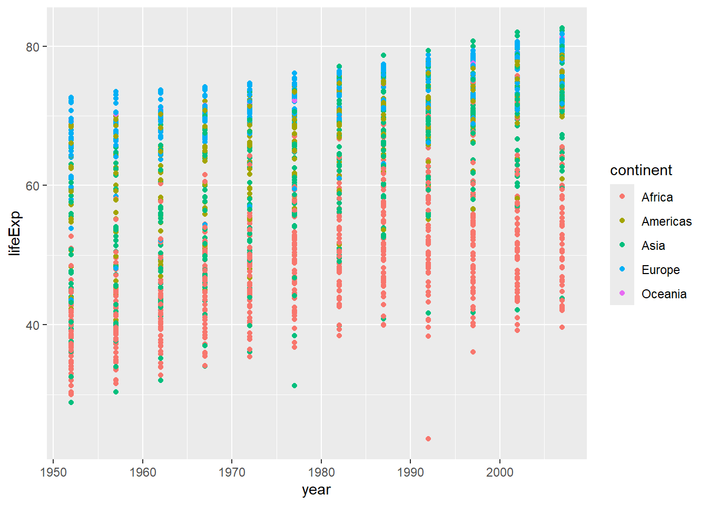
The general trend shows increased life expectancy over the years. Continents with stronger economies show longer life expectancy.
Let’s visualize change over time with a line plot instead:
ggplot(data = gapminder, mapping = aes(x = year, y = lifeExp, color = continent)) +
geom_line()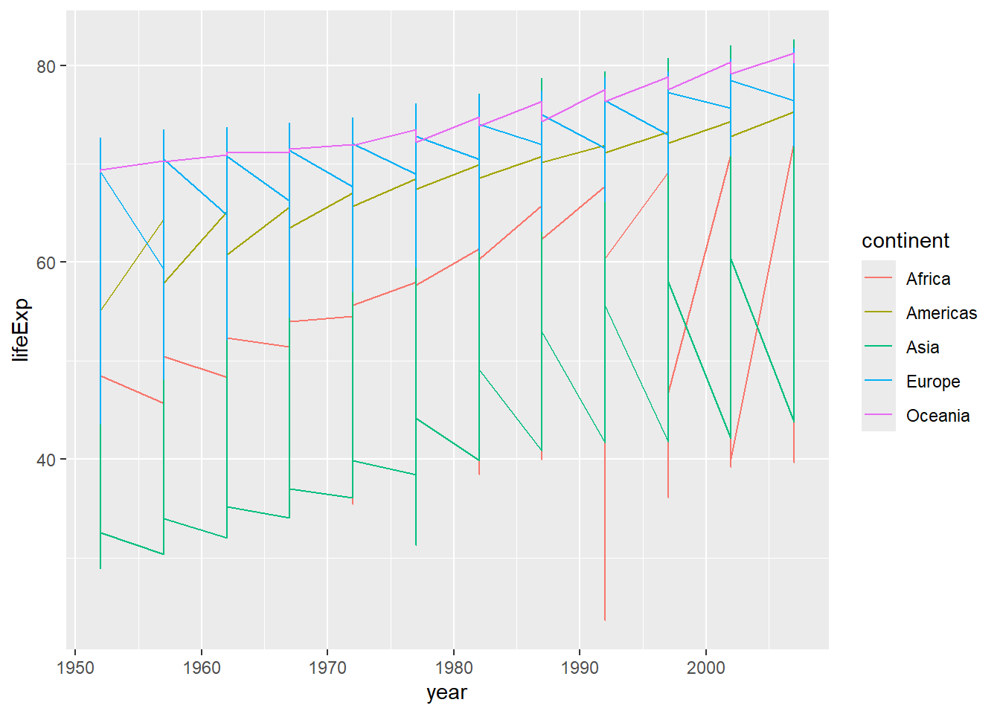
The result looks jumpy! Let’s separate by country.
Use the group aesthetic to draw one line per country:
ggplot(data = gapminder, mapping = aes(x = year, y = lifeExp, group = country, color = continent)) +
geom_line()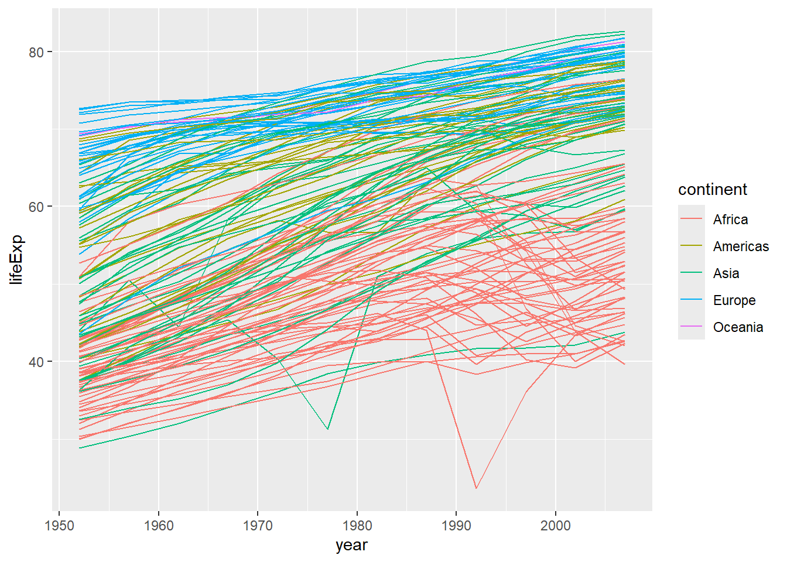
Now each country has its own line, colored by continent.
Add multiple layers to show both lines and points:
ggplot(data = gapminder, mapping = aes(x = year, y = lifeExp, group = country, color = continent)) +
geom_line() +
geom_point()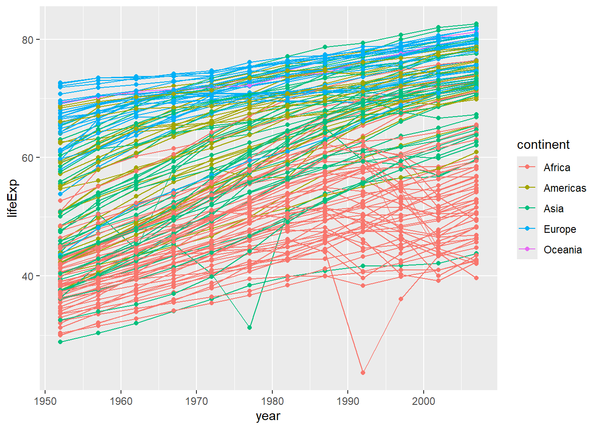
Each layer is drawn on top of the previous layer:
ggplot(data = gapminder, mapping = aes(x = year, y = lifeExp, group = country)) +
geom_line(mapping = aes(color = continent)) +
geom_point()Here, color only applies to lines, and points are drawn on top.
Mapping: Use aes() to connect aesthetics to data variables
geom_line(mapping = aes(color = continent)) # Different color per continentSetting: Put aesthetic outside aes() for a fixed value
geom_line(color = "blue") # All lines are blueSwitch the order of the point and line layers from the previous example.
What happened?
ggplot(data = gapminder, mapping = aes(x = year, y = lifeExp, group = country)) +
geom_point() +
geom_line(mapping = aes(color = continent))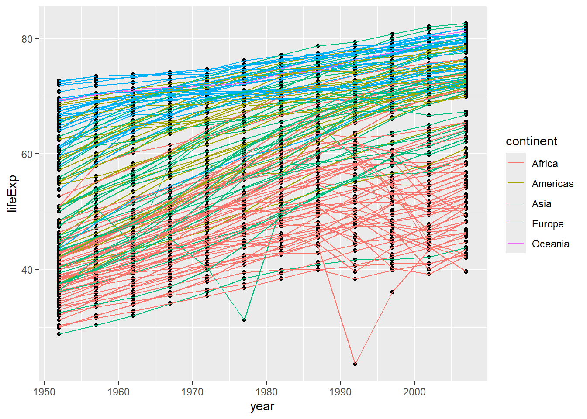
The lines are now drawn over the points!
Let’s go back to our first scatterplot:
ggplot(data = gapminder, mapping = aes(x = gdpPercap, y = lifeExp)) +
geom_point()
Strong outliers in GDP make it hard to see relationships.
Use scale_x_log10() and alpha for transparency:
ggplot(data = gapminder, mapping = aes(x = gdpPercap, y = lifeExp)) +
geom_point(alpha = 0.5) +
scale_x_log10()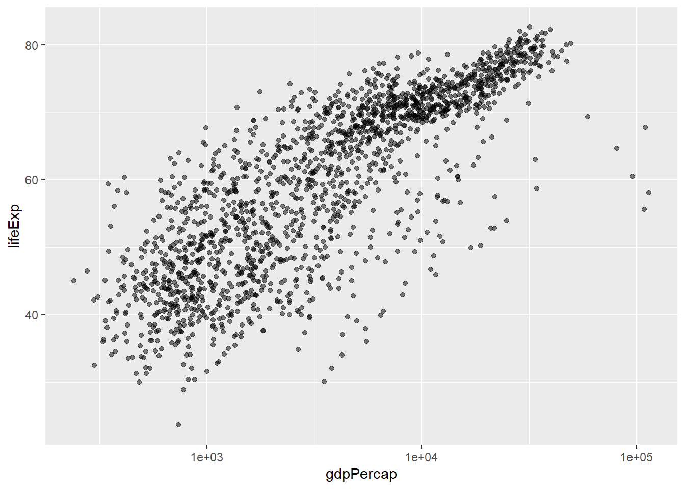
Each multiple of 10 is now evenly spaced on the x-axis.
The alpha setting (0 to 1) controls transparency:
alpha = 1 - fully opaque (default)alpha = 0.5 - 50% transparentalpha = 0 - fully transparent (invisible)Useful for overlapping points!
Use geom_smooth() to fit a statistical model:
ggplot(data = gapminder, mapping = aes(x = gdpPercap, y = lifeExp)) +
geom_point(alpha = 0.5) +
scale_x_log10() +
geom_smooth(method = "lm")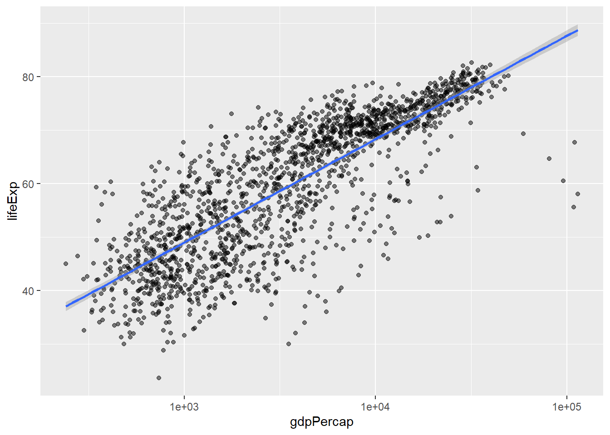
The gray shaded area shows 95% confidence intervals.
Make the line thicker with linewidth:
ggplot(data = gapminder, mapping = aes(x = gdpPercap, y = lifeExp)) +
geom_point(alpha = 0.5) +
scale_x_log10() +
geom_smooth(method = "lm", linewidth = 1.5)Modify the color and size of the points on the point layer in the previous example.
Hint: Do not use the aes() function.
Hint: The equivalent of linewidth for points is size.
ggplot(data = gapminder, mapping = aes(x = gdpPercap, y = lifeExp)) +
geom_point(size = 3, color = "orange") +
scale_x_log10() +
geom_smooth(method = "lm", linewidth = 1.5)
Color and size are set outside aes() so they apply to all points.
Modify your solution to Challenge 4a so that the points are now:
Hint: The color argument can be used inside the aesthetic.
ggplot(data = gapminder, mapping = aes(x = gdpPercap, y = lifeExp, color = continent)) +
geom_point(size = 3, shape = 17) +
scale_x_log10() +
geom_smooth(method = "lm", linewidth = 1.5)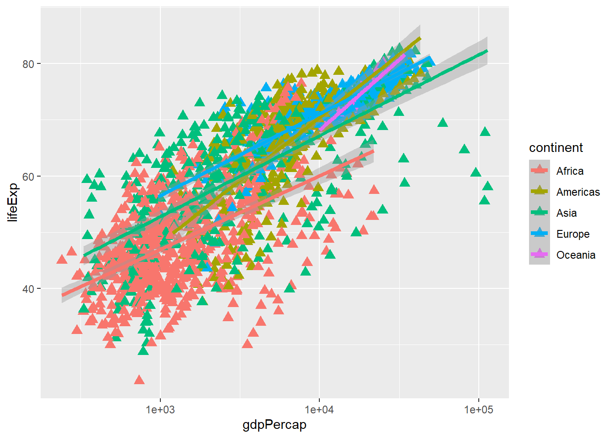
shape is set for all points, while color is mapped to continent.
Split data into panels with facet_wrap():
americas <- gapminder[gapminder$continent == "Americas", ]
ggplot(data = americas, mapping = aes(x = year, y = lifeExp)) +
geom_line() +
facet_wrap(~ country) +
theme(axis.text.x = element_text(angle = 45))
The formula ~ country tells R to:
Clean up labels with labs() and theme():
ggplot(data = americas, mapping = aes(x = year, y = lifeExp, color = continent)) +
geom_line() +
facet_wrap(~ country) +
labs(
x = "Year",
y = "Life expectancy",
title = "Figure 1",
color = "Continent"
) +
theme(axis.text.x = element_text(angle = 90, hjust = 1))
labs() sets various text elements:
x - x-axis titley - y-axis titletitle - main plot titlecolor - legend title for color aestheticfill - legend title for fill aestheticSave plots with ggsave():
lifeExp_plot <- ggplot(data = americas, mapping = aes(x = year, y = lifeExp, color = continent)) +
geom_line() +
facet_wrap(~ country) +
labs(
x = "Year",
y = "Life expectancy",
title = "Figure 1",
color = "Continent"
) +
theme(axis.text.x = element_text(angle = 90, hjust = 1))
ggsave(filename = "results/lifeExp.png", plot = lifeExp_plot,
width = 12, height = 10, dpi = 300, units = "cm")Two nice things about ggsave():
Default to last plot: If you omit the plot argument, it saves the last plot you created
Auto-detect format: Determines format from file extension (.png, .pdf, etc.)
Generate boxplots to compare life expectancy between the different continents during the available years.
Advanced:
ggplot(data = gapminder, mapping = aes(x = continent, y = lifeExp, fill = continent)) +
geom_boxplot() +
facet_wrap(~ year) +
ylab("Life Expectancy") +
theme(
axis.title.x = element_blank(),
axis.text.x = element_blank(),
axis.ticks.x = element_blank()
)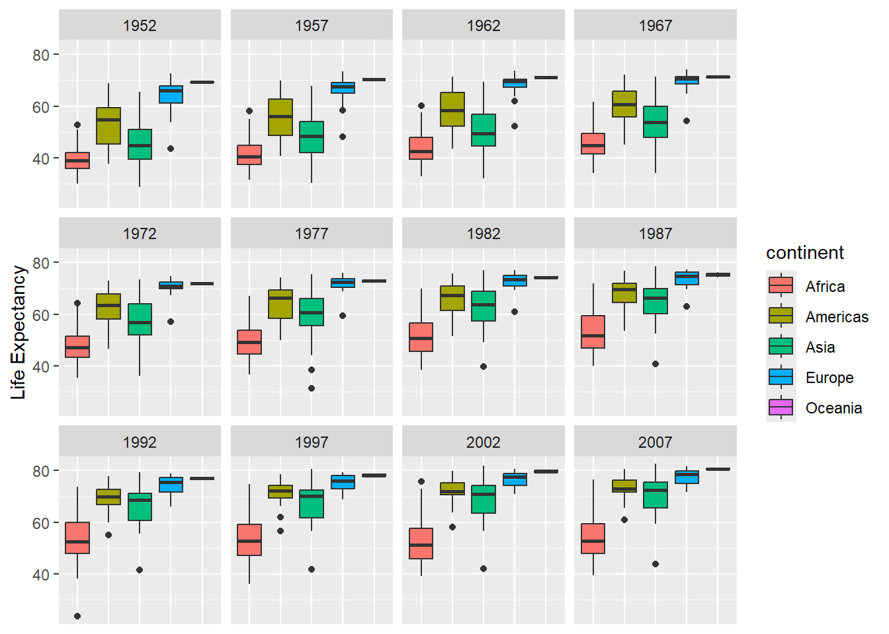
Here are some frequently used geom functions:
| Geom | Description |
|---|---|
geom_point() |
Scatterplot |
geom_line() |
Line plot |
geom_boxplot() |
Box plot |
geom_histogram() |
Histogram |
geom_bar() |
Bar chart |
geom_smooth() |
Trend line |
ggplot2 to create plotsaes() to map data to visual properties+ operatorlabs() and theme()ggsave()aes() for fixed valuesaes() for data-dependent valuesfacet_wrap() for multi-panel figuresscale_* functions to transform axes